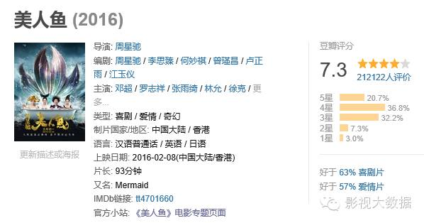
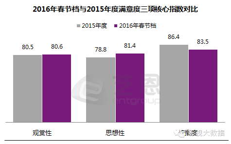
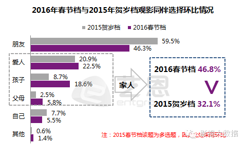

虽然笔者一直都看好《美人鱼》的票房，但当仅仅12天就打破了《捉妖记》票房第一纪录这个新闻传来，当票房呼啸着20天内就突破了30亿，笔者不得不说一句：“我和我的小伙伴们都惊呆了……”截止发稿时，美人鱼票房已高达31亿，该片的巨大成功成为行业热议焦点，也为2016年电影市场打下一个浓墨重彩的开局，极有可能成为行业研究的重点对象。 我们不禁要问：《美人鱼》为什么这么红，谁赚了钱，谁成了名，谁获了利？有样学样，下一个赚钱的是你吗？《美人鱼》的成功不但创造了诸多的票房纪录，例如一系列的“最快打破”以及“票房单日过亿”，而且对于其出品方、发行方的股票价格都造成了极大的影响。
周星驰的比高集团的股价一度大幅上扬，在电影上映期间该支港股成交量激增，股价峰值比电影上映之前上涨17.4%。
参与电影出品与发行的几家公司中，也有从前并不为大家所熟悉的公司打响了名号，例如参与影片保底之一的和和影业。
以前参与影片保底的多是传统影业公司，和和影业则是一家有强烈私募基金背景的影业公司，显然金融玩家已经越来越多地参与电影业的游戏。据了解，直到3月初《美人鱼》都将保有25%以上的排片，保守预估美人鱼最终票房将过32亿元，根据院线方和发行方的分成比例，院线分得57%，发行和制作分得43%，则片方和发行商最终能拿到13.76亿元。媒体称《美人鱼》的制作成本高达4亿元，因此净利润将在10亿元左右。这还不包括股市带来的收益。
事实上影视传媒股也的确受春节档票房的利好逆势上涨，16日开市当天光线传媒就上涨了8%，近20亿市值，一度涨幅高达25亿，相当于《美人鱼》8天的票房综合。美人鱼给光线带来的短期概念效应十分惊人，同时也展示了光线的市场能力，为其2016年业报打下良好基础。数据显示，共14家基金持有光线传媒股，持仓量总计663.22万股，占流通A股0.50%。在《美人鱼》票房不断刷新记录的同时，这些基金也分享了高红利。《美人鱼》的自身衍生市场空间也极具想象力，一位业内人士表示，美人鱼的衍生市场价值保守估计应有几十个亿，但目前衍生品开发还比较少，目前看到的有周星驰手绘的“美人鱼”独家授权著名珠宝品牌IDo打造 “鱼萌萌”项链等衍生品。事实上，早在2013年，周星驰就曾经与浙江桐乡乌镇西栅景区合作，计划开发大话西游的大型主题影城“西游影城”。该项目毗邻乌镇景区，规划用地约1000亩，拟建成国家5A级旅游景区，但后续跟进尚不清晰。周星驰能否在美人鱼项目上用力衍生一把，市场是有需求的，就看星爷是否愿意投精力了。在经济不景气的情况下，娱乐行业往往更加兴旺。美人鱼的逆势上行，成为了2016年电影业兴旺发达的一个标志，给2016年本来就大火特火的电影市场来了一把火上浇油。受此示范效应影响，不少行业外资金加速向影视业流动倾斜。《美人鱼》对于周星驰的意义是毋庸置疑的，首先是证明了自己的一套依然拥有庞大的市场，“宝刀未老”，也挽回了上次的《西游降魔篇》票房叫好、自己却挣不到钱的尴尬。
而正在制作中的由周星驰监制、徐克导演的《西游伏妖篇》显然也会因此分得一些声势，这部预定了明年春节档的周星驰、徐克双重保驾的电影，恐怕会让各大瞄准年年刷新票房纪录的春节档的竞争者们稍微三思，避其锋芒。
之前《捉妖记》的发行方曾在采访中提到，就是为了避开星爷才没有选择《捉妖记》在春节档上映，无论是否属实，总有那么几分道理。所以《西游伏妖篇》只要把招牌树好，可以说一开始就锁定了一定程度的成功。至于会不会如《美人鱼》般再创辉煌，那还有待届时评估。但敏感的是，周星驰的作品往往经历周期较长，在经过美人鱼的天量消费和口碑加持之后，市场期待又创新高，对《西游伏妖篇》的要求无疑是进一步提高了。星爷头发恐怕要全部熬白的节奏。作为男主演，邓超获利同样巨大，从《烈日灼心》的演技备受肯定，到《恶棍天使》的争议，邓超一度下跌受创的口碑再一次在《美人鱼》中被挽回，霸道总裁的人设带来的“苏点”让他在各论坛和微博的讨论度再度升高，公众形象中对演技的评价也提升不少。尽管近期因为微博向佐事件引起了一些争议，却几乎没人质疑邓超是个好演员。
作为中生代男演员电影咖，邓超明显是前途无量，在票房和商业价值上创造了一个巅峰。只是，“邓超只要不当导演就很好”这样的评论现在似乎颇为常见，不知道邓超自己是不是开心呢？而外表逗比、内心邪魅狂狷、坚持放飞自我的超哥是否能放弃自己的导演梦，那也难说的很……新人女主演林允能在出道之际就得到这样的票房成绩，不能不让人把她和“谋女郎”倪妮比一比。
笔者在《美人鱼》上映前的分析文章里曾经提到个人认为她和倪妮的型有些相近，万万没想到后来的一连串证据表明，她是真的很热衷于去和倪妮学习，除了时尚感、拍照pose，连绯闻男友都选了同一个……模仿路线相近的演员去造成大众的比较，这是一个常见的提高个人记忆点的快捷路径，而有了绯闻也不怕没有跟拍和话题。事实上比较百度指数我们也会发现，电影上映前，林允作为星女郎已经取得了相当大的人气预期空间，并提前获取了一定的后续资源，反而是电影上映后，林允百度指数的上升远不如之后因全民星探的爆料绯闻而形成的峰值指数。搜索各大论坛，《美人鱼》电影本身似乎并没有给林允形象带来太多的帮助，究其原因，也许一方面是比较傻白甜的女主人设光芒不够，争议不多，没什么好讲，留下的印象不够深刻，而且不少观众被美艳的张雨绮吸引了不少目光；另一方面是大众都倾向于她目前的成功是星爷的护航，其个人的市场价值还没有能被证明。预计林允的热度还可以再保持一阵子，但是之后是好是坏还很难说。毕竟星爷一向专注于自己的电影创作，似乎不是很擅长捧人，历任星女郎不糊者几稀。反而是和冯绍峰的绯闻可以让她继续保持一定的话题点。不管有心无心，在《三打》同步上映之际，两片男女主角的绯闻对电影和对两位的后续话题还是有利的。事实上因为《极限挑战》综艺的热度，这位台湾演员再一次回到了观众的视野中心，但是因为一系列个人事件，其公众形象并不算十分良好；但是这次《美人鱼》出演的令人喜爱和揪心的八爪鱼角色为其挣得了相当的正面印象，事实上现在有关《美人鱼》的微博同人漫画创作，一半以上是以罗志祥的八爪鱼角色为主题，其微博关注度可见一斑。以霸道美艳角色登场的张雨绮，讨论度居高不下。在上面的百度指数比较中我们会发现张雨绮的个人搜索指数是除了林允外上升最多的。笔者留意到张雨绮方面也顺势做了一系列微博推广和形象公关。
张雨绮在其离婚后就有一段日子没有出现在公众面前，也没有令人瞩目的影视作品，可见对其事业还是造成了一定的影响。而显然其离婚事件对公众形象造成的影响在这次电影之后大约会翻页了，事业可能会再迎来一个春天也未可知。最近她正积极出没于时装周，显然是摩拳擦掌打算再战。还值得一提的是在该片中客串演出的吴亦凡。虽然只有短短的几幕镜头，但事实上吴亦凡正是从此片中正式与周星驰搭上线，然后有接下了《西游伏妖篇》中领衔主演唐僧的角色，预计将在明年春节亮相。《美人鱼》的高票房，对于其在观众里混个脸熟有一定的帮助作用，而《西游伏妖篇》的机会，也使其在一众同时涌出的小鲜肉中，得到了相对较高的起点。
吴亦凡最近论坛舆情指数和微指数都居高不下，人气十足，最近又接下了吕克贝松的《星际特工》，以及好莱坞大片《极限特工3》，并且似乎都不是打酱油的戏份。在现在的新生代明星市场里，人气和机会缺一不可，而吴亦凡两者都有，这使得其在新生代男演员中占据一定优势。如果再能收获《西游伏妖篇》的成功，对其日后彻底上位显然会有十分重要的帮助。甚至可以说，即使在美人鱼主创之外，由于美人鱼巨大成功，给西游伏妖篇带来了巨大期待，伏妖篇主演之一的林更新，也成为了预期中的潜在受益者之一。
可以说，《美人鱼》这部电影，给每一个参与电影的主创们都带来了更多的机会，给相关电影人、产业链也带来了巨大机遇。在《美人鱼》上映前，很多人对于“周星驰”这个招牌是否还能卖，都抱有或多好少的好奇，而在《美人鱼》大卖之后，看客们又轻易地下了结论，果然观众就是吃“周星驰”这碗情怀饭吧。
大卖当然有一部分原因和周星驰有关，尤其是在前期宣传和吸引第一波观众的阶段，周星驰招牌和片中一些知名演员的号召力都是有重要作用的。
另外，结合发行方、营销方案提供方之前受访时提到的“饥饿营销”策略，结合出品方提到的天价保底策略，《美人鱼》显然是一次多方运作的成功。任何一部影视作品的成功，都不可能脱离其内容本身，毕竟就算运营方再能运作，总得有东西可卖吧？在电影品质方面，《美人鱼》在豆瓣电影7.3分的评分、猫眼9.1分的评分都在证明观众对该片品质的认可。但如果我们细分一下，观众为什么对该片的品质认可，《美人鱼》到底给了观众什么东西让它被认可呢？
如果把这个问题抛给观众，问：“你为什么去看《美人鱼》，甚至二刷、三刷？”他/她可能会回答你：因为是周星驰电影；因为我是邓超、或者吴亦凡的粉丝；因为好笑欢乐；因为过年合家欢；因为情人节约会；因为朋友推荐；因为自己看了觉得好看就再带家人看一遍……等等。从以上这种种原因中，我们会发现，除了一部分周星驰和主创人员的情怀效应、明星号召力外，最主要的是内容受到第一波观众肯定后，引起的口耳相传，这也是现在许多票房成功电影的原因。但是，品质受到肯定、又口耳相传的秘密是什么呢？在过去的几年里，大卖的《泰囧》、《捉妖记》、《夏洛特烦恼》等片都告诉电影人，喜剧元素就是比较好卖。但是，那么多部喜剧，为什么《美人鱼》就是比别的片子票房高出那么多呢？和同是星爷出品的《西游降魔篇》相比它也胜出了太多。这仅仅是因为市场体量更大了吗？《美人鱼》的胜出，和它的题材有很大关系。《美人鱼》大胜的其中一个原因，是因为《美人鱼》是一部三观正确、普世价值、宣导内容积极向上的环保电影。
当我们点开一些《美人鱼》的长篇差评，会发现不少人的角度都是攻击《美人鱼》的剧情幼稚；或者说它根本是无聊的环保宣导影片。怀着批判态度的影评人们们总是能找到各种各样的问题，认为别人的东西浅薄而无知。
但是，当你抛弃文化人的优越感和追求深度的挑剔，去认真体会平民市场，你会发现简单而向上的主题的重要。事实上，在一份针对刚刚过去的春节档的满意度调查中，有这样的数据体现：
这份调查的结果显示，观众认为今年的春节档电影，观赏性满意度与去年持平，但在思想性上，却以81.4%的满意度远高于去年的78.8%。而思想性满意度名列前一位的正是《美人鱼》。
价值观的正确和表达方式的朴素对文化作品来说其实是一件非常重要的事。这里的价值观指的并不是政治意涵的社会价值观，而是简单的世界观。一部有趣的作品可以让你的票房好看，一部有趣而且有正能量价值观和传播能力的作品，则能产生广泛影响力。从观众心理的角度剖析，每个普通人都有向好的心态，和对正能量的追求，也希望能为自己所做的选择找到正当性。这时候，具有正确的价值观——如美人鱼的“环保”，就会比起其它电影给人以更多的“我做了一个善良的选择”的心理暗示，以及更乐于把这份朴素的“善良、美好或者说是自我感觉良好”推荐给家人和朋友，因为这种宣传也是对自己的“对地球环境关怀”的正确价值观进行了二次肯定。可能正是这份很多人具有的潜意识，使得《美人鱼》更容易获得人们自发的宣传和推广。

尤其，在现今合家观赏占观影人群46.8%的春节档时，带着家人看一部价值观朴素而正确的电影，给孩子讲讲朴素的人生道理，这也更容易让家长获得一种“做到了寓教于乐”的自我满意。而《美人鱼》被一些人认为过于简单幼稚的类童话剧情，对于老人和孩子确实很适合的，对于那些生活已经很复杂，不想再在电影里寻找复杂的成年人观众也更加具有吸引力。在当今电影市场里，不少电影人对于发掘所谓“三观正确”的主流主题兴致缺缺，有的电影人或是充满了自由浪漫主义思想的文艺范儿，或是觉得价值观就是要深刻挖掘社会弊病才得以体现，对于三观正确具有普世价值的电影，往往会觉得那不够深刻、粉饰太平或是歌功颂德，商业大片似乎顶多就像《人在囧途》、《港囧》之类的，发掘一下拒绝婚外恋、悬崖勒马的传统家庭精神——甚至是以男性为核心的家庭精神。
然而电影人却似乎忽略了一个现实，那就是看电影的人民群众其实也是需要一些朴素的、不那么复杂深刻的、不是老堕胎或婚外情的美好简单的电影。比如我们如果回头看1995年的奥斯卡最佳电影颁奖，《阿甘正传》战胜了《肖申克的救赎》和《低俗小说》，谁说《肖申克的救赎》不是伟大电影呢？但是《阿甘正传》却是美国人民对国家感情和那种中间偏右的价值观的胜利。当今中国处在一个巨变的时代，许多人的三观是模糊而混乱的，这种时候，简单而明晰的价值观就有其市场，问题只是在电影人能不能找到一个好的切入点。《美人鱼》做到了，《美人鱼》的胜利，有相当部分是题材的胜利，也是价值观的胜利，更是一种朴素的价值观被很好很有趣地表达的胜利。
其实如果我们回头看《大圣归来》电影票房的逆袭，对国漫情怀的胜利何尝不是一种价值观的胜利呢？那是对中国文化的肯定、对中国动漫前途的期盼的胜利，是很朴素的人民感情。其实有些东西并不需要太复杂，只要找准核心，再以不要太拙劣的表现方式讲好故事做好电影，一定会有吃这套价值观的人捧场。除去这些形而上的东西，《美人鱼》的成功也是香港团队更与内地“接地气”的象征。星爷启用麦特文化这样的内地营销公司参与宣传，不但在网络宣传上极尽画手、段子手各种卖萌之能事，还积极跑了20个城市的路演，不能不说这样的与大众博感情的方式在几年前的香港团队里几乎是没有的。而它也确实达到了积极效果。
当今社会讲求“体验经济”，其实无论是为观众考虑的剧情设计，还是与观众积极互动的宣传手法，也不能说不是关注观众体验的思维模式。这样说来，其实《美人鱼》正是一部很了解普通观众想要什么、就给了观众他们的需求、从而大卖的电影。《美人鱼》的成功，是把周星驰情怀、港片情节、一些致敬元素这些“旧”的东西，使用返璞归真、童真简单、不需纠结的方式，和环保等当下人们关心并与人类未来息息相关的“新”价值观串联起来的成功，可以说是一部电影讲述了从过去到未来的串联，全面的覆盖必然会有某一点戳中观众。
周星驰层在电影《食神》里提到，最考验一个好厨师功力的，正是“蛋炒饭”这样最简单的东西，也许这正体现了星爷的价值观，返璞归真却集大成于一身。这种综合能力正是从业人员值得思考和学习的。